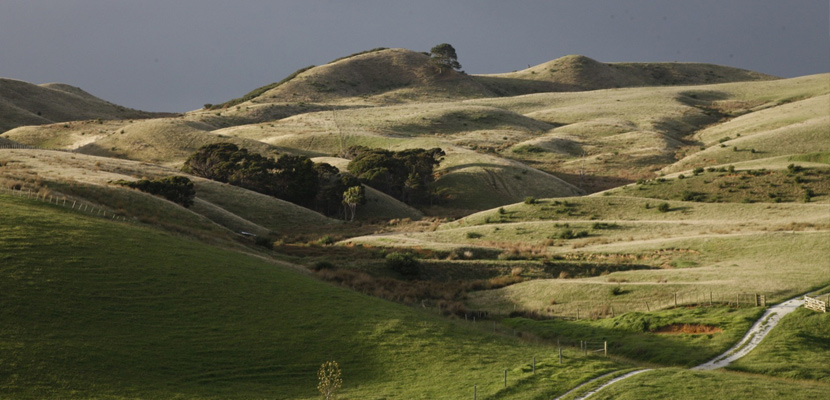

<!DOCTYPE html>
<html lang="en">
<head>
    <meta charset="UTF-8">
    <meta name="viewport" content="width=device-width, initial-scale=1.0">
    <title>Oneriri station images</title>
    <link rel="preconnect" href="https://fonts.googleapis.com">
    <link rel="preconnect" href="https://fonts.gstatic.com" crossorigin>
    <link href="https://fonts.googleapis.com/css2?family=Vollkorn+SC:wght@400;600;700;900&display=swap" rel="stylesheet">
    <link rel="stylesheet" href="./styles.css">
</head>
<body>
    <footer>
        <header>
            <div class="background_main">
                <h1 class="image_title">
                    IMAGES
                </h1>
            </div>
        </header>
        <nav> 
            <ul class="font-1">
                <li><a href="index.html">HOME</a></li>
                <li><a href="image.html">IMAGES</a></li>
                <li><a href="information.html">INFO</a></li>
            </ul>
        </nav>
        <main> 
            <div class="image_main">
                
                
                
                
                
                
                
                
                
                
                
                
                
                
                
                
                
                
                
            </div>
        </main>
        <div class="font-1 background">
            <div class="footer-spacing">
                <h4 class="Footer_title">Oneriri station, Rd 2 kaiwaka, Northland, New Zealand.</h4>
                <h4 class="Footer_title">Contact:<a class="large_footer_link" href="mailto:admin@oneriri.co.nz">admin@oneriri.co.nz</a></h4>
            </div>
            <p class="Footer_subtitle">Original site made by <a class="small_footer_link" href="http://www.website-designs.co.nz" target="_blank">Website Designs NZ.</a></p>
            <p class="Footer_subtitle">All data is taken from <a class="small_footer_link" Href="https://www.oneriri.co.nz/" target="_blank">Oneriri Station Website.</a></p>
            <p class="Footer_subtitle">Site made by Clive McPike</p>
        </div>
    </footer>
</body>
</html>